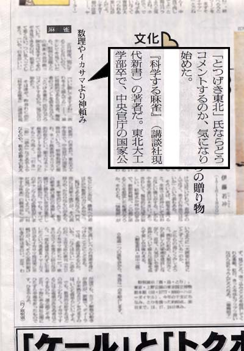
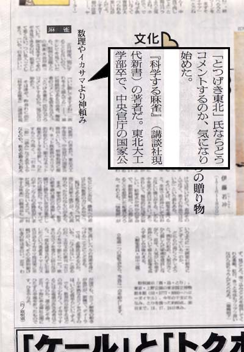
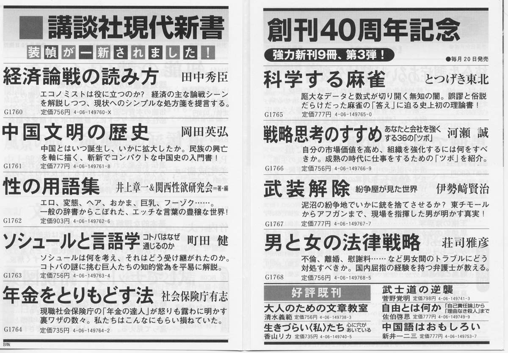

{kind=link}

（中央：05/01/08朝日新聞夕刊10面、四ノ原恒憲氏の記事「数理やイカサマより神頼み」より）
（右：05/01/20日本経済新聞夕刊14面、二宮清純氏の書評より）
Amazon注文へGo！ 定価740円（税別）
とつげき東北著『科学する麻雀』講談社現代新書（No.1765）ISBN4-06-149765-0
※書店では、麻雀コーナーではなく新書のコーナーに置かれていることが多いです。
2005/02/10 ４刷決定
2005/02/01 週刊朝日「ニュースな本」で掲載。
2005/01/25 ３刷決定
2005/01/20 日本経済新聞（夕刊）書評で取り上げられました。
2005/01/08 朝日新聞（夕刊）コラムで取り上げられました。
2004/12/28 ２刷決定
2004/12/17 刊行（公式上の発行日は12/20のようです）
質問対応
内容は？（自己宣伝）
最先端の麻雀理論書であるとともに、最先端の麻雀戦術書です。
例えば、攻めるか、降りるかの判断としては、「自分の役の点数がX、相手の役の点数がYで、状況別（自分のテンパイ受け入れや待ちの形がある形のとき）の、攻めるべきXとYの関係式」などが理論的に導出されています。
導出過程も述べられていますので、より細かい状況や、特殊なルールについても、読者が自ら計算できます。
もちろん式は噛み砕かれ、「親でどんな形のとき、何順目までのどういう形なら全ツッパ」というようにわかりやすくまとめられています。
例えば、［トップ率の予測理論］より引用
「77.4％が誤差1％未満、98.9％が誤差2％未満となっていてよく一致している。4人それぞれの点数から、各々の平均順位、トップ率をかなり精確に求める方法が理論化された。」
点数状況を、最終的な麻雀の「価値」に非線形変換するための高精度な理論が、丁寧な解説つきで載っています。
表を見れば、「東1でマンガンをツモ和了するとトップ率がいくらになる」ということがわかります。平均順位も導出できます。
「トップ獲得力」という概念を数式で定義し、洞察によって巧妙に変形するだけの、（答えだけ見れば）簡単な理論ですが、麻雀アルゴリズムにとっては革命的な方法論です。
ルールに依存しない計算なので、同じ手法がいろいろなルールに対応させられ、麻雀アルゴリズムに組み込むことが可能です。
イーシャンテンやテンパイのいくつかの形から「ある牌を切ると、和了率や放銃率がどうなり、その結果順位やトップ率がどうなる」ということが、理論上は計算で求められるようになっています。
各種ルールに応じてトップ率や和了率等に相応の点数づけをすれば、麻雀の打牌の「価値」を精確に求められます。
上記は一例ですが、こういった判断の『答え』を理論的に求めた例は、過去にありません。
本書は麻雀の全てを解明する「魔法の方程式」を載せた本ではなく、これからも研究を続けていく必要があり、その過程においてより誤差の小さい、優れた理論が発見されていくでしょう。
しかし麻雀の理論的な研究の土台となる教科書として、本書はバイブルとなります。
「教養は万人が身をもって養い創造すべきものであって（後略）」講談社現代新書の刊行にあたっての言葉です。本書は麻雀の本として初めての、教養となり得る書です。

（講談社現代新書の折込広告より）
★記念記録
（あくまでも短いスパンでの記念記録で、よかったものだけを掲載しています。あんま儲かってません）
01/31～02/06 紀伊国屋書店新宿本店 新書週間ベストセラー ７位
01/24～01/30 紀伊国屋書店新宿本店 新書週間ベストセラー ７位
01/17～01/23 紀伊国屋書店新宿本店 新書週間ベストセラー 10位
01/10～01/16 紀伊国屋書店新宿本店 新書週間ベストセラー ５位
01/03～01/09 紀伊国屋書店新宿本店 新書週間ベストセラー ４位
12/27～01/02 紀伊国屋書店新宿本店 新書週間ベストセラー ６位
01月29日 Amazon「新書」売れている順 ９位／18192件中
01/04～01/10 三省堂書店 新書週間ベストセラー 12位
01/03～01/09 bk1 新書その他週間ベストセラー ４位